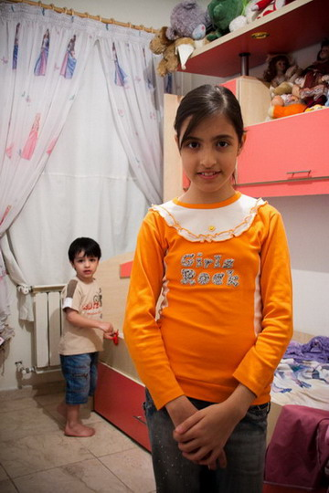

|
|
|
Browsing
Contact Us |
Campaigners |
Face to Face |
Tribune |
Interview |
News |
On the Web |
One Million |
Report
Farsi | Français | German | Italian | Spanish | العربية Also in this section
|
Nasrin Sotoudeh’s Letter to Her Daughter Mehraveh: Your Strength was no Less than MineSaturday 16 April 2011 Change for Equality: While the U.S. PEN Association announced that they will be awarding Nasrin Sotoudeh their American PEN Award for 2011 for her work in defending human rights and freedom of expression, Sotoudeh herself was busy writing a letter to her 11 year old daughter Mehraveh from Evin prison. The content of Sotoudeh’s letter to her daughter is as follows: To my dearest Mehraveh, my daughter, my pride and joy, I greet you from Evin’s ward 209 and hope that you are doing well. I come to you without concerns, sadness and tears and instead greet you with a heart filled with love and best wishes for you and your beloved brother. It has been six months since I was taken away from you my beloved children. Throughout these six months we were only allowed to see each other a few times and even then in the presence of security agents. During this time I was never allowed to write to you, to receive a picture, or even meet with you freely without any security restrictions. My dear Mehraveh, you more than anyone understand the sorrow in my heart and the conditions under which we were allowed to meet. Each time, after each visit and every single day, I struggle with the notion of whether or not I have taken into consideration and respected my own children’s rights. More than anything I needed to be sure that you my beloved daughter whose wisdom I very much believe in, did not accuse me of violating my own children’s rights. My dearest Mehraveh, I began reflecting upon your rights and that of your brother from the very first day I was arrested. Because of your age, I worried more about you. I worried about your ability to endure, your judgment of the situation, your morale and most importantly I worried about the effect it [my arrest and incarceration] would have on your interactions with your peers at school. It wasn’t long however, before all my doubts and concerns were put to rest and I knew that I, better said we, were able to stand firm and true to our convictions.
 My dearest daughter, my concerns regarding your interactions with your peers at school were also completely unfounded, for the young generation is always more intellectually mature and wiser than the generation preceding it. ... and so I was able to rid myself of all concerns and stand strong and firm. I owe this strength to you and your father. My dearest Mehraveh, allow me to share with you some of our fonder memories. When night falls, while I lay in prison, I often think about how I used to put you to sleep. Of all the lullabies and songs I sang for you in bed, you were most fond of the one called "Fairies". Every night as you fell asleep, you’d ask me to recite it to you and I would gladly begin with... Once upon a time, My dearest daughter, you were my main motivation for pursuing children’s rights. I thought then and still believe that all my efforts in the area of children’s rights will benefit no one more than my own children. Every time I came home from court, after having defended an abused child, I would hold you and your brother in my arms, finding it hard to let go of your embrace. To this day, I don’t understand why... perhaps by holding you closely in my arms I wanted to compensate for the pain of the victims of child abuse. I recall you telling me once that you don’t wish to be 18 years old. When I inquired as to why you responded that you’d hate to be denied the benefits of childhood and that of being a child. You cannot imagine how happy your response made me. I can’t recall how many times you reminded your father and I that you are still a child, that you are not 18 yet and that we should respect your childhood and your rights as a child.... You demanded that we respect your rights as a child and I am so glad you did, for at times neglect can lead us to disregard another persons rights, even if the other individual happens to be our own child. Through the eyes and the words of a child you reminded us adults who saw ourselves as your protector of the importance of having respect for the rights of others, demanding ones rights, justice, a legal framework, equality and other such important matters. My dearest Mehraveh, just like I was never able to disregard your rights and always sought to protect them to my fullest capacity, I was also never able to disregard the rights of my clients. How could I abandon the scene as soon as I was summoned [by the ruling government], knowing that my clients were behind bars? How could I abandon them when they had hired me as their legal council and were awaiting their trial? Never... I could never do such a thing.... In closing I want to tell you once again that it was my desire to protect the rights of many, particularly the rights of my children and your future that led me to represent such cases in court. I believe that the pain that our family and the families of my clients have had to endure over the past few years is not in vain. Justice arrives exactly at a time when most have given up hope. It arrives when we least expect it. I am certain of it. My only wish for you is a childhood full of happiness and joy. If you are upset with the interrogators and judges as a result of the case against me, bestow peace and tranquility upon them with your childlike melody so that as a result we too can achieve much deserved tranquility and peace of mind. I miss you my dearest and send you one hundred kisses, Maman Nasrin [your mother Nasrin] Original letter in Farsi Translated to English by: Banooye Sabz (taken from Facebook page for Nasrin Sotoudeh) |